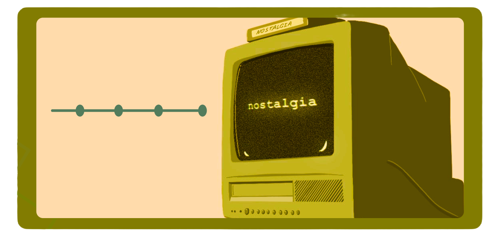
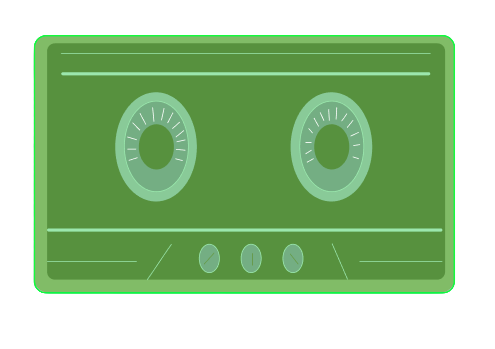

What Does Nostalgia Means To Me?
Nostalgia : a sentimental longing or wistful affection for the
past, typically for a period or place with happy personal
associations - Oxford Dictionary
As I have gotten older, I have felt a new
emotion: nostalgia. I think this feeling is often
overlooked and under appreciated. As kids, we have nothing
to miss because it is our first time
experiencing the world. But as the years go
by, I find myself holding on to my childhood,
my teenage years, and all the things I loved
that shaped who I am now. As life keeps
changing and everything continues to progress, I think
it is important to remind ourselves of the
familiar routines, comforting sounds, and small moments that
made life exciting when we were younger. Not
only to appreciate them, but also to keep
creating new memories to feel nostalgic about in the future.

What Is a Nostalgia Archive?
An archive of the things that shaped my childhood
and teenage years
to make the adult I am now.
Creating a nostalgia archive is a way to
appreciate, remember and hold onto the things that
were important to us in a way that’s
not harmful. Now, there’s a lot of things
that could be seen as special to me so
I’ve divided the categories into Food and Places,
Apps and Technology, Memes and Internet Culture, and
Movies and shows. I feel these categories allow me
to gather a gauge of the digital things
and technology that shaped me and the experiences
and food as well.
